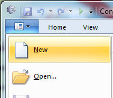
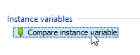
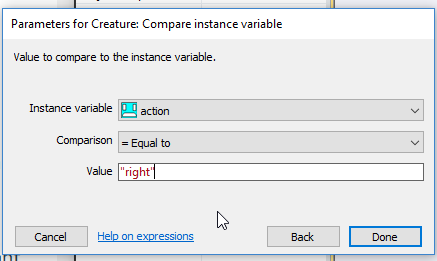
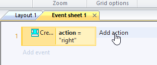
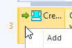

Microsoft Imagine Cup
Each year, Microsoft run a competition called Imagine Cup where you build an app that solves a real-world problem.
Entering Imagine Cup is a big commitment, but you can also enter Imagine Cup Junior - it's smaller and everyone has time to do it!
For Imagine Cup Junior, you make a game using Construct 2. It's fun and easy - let's try it out.
Construct 2
Construct 2 can make all kinds of 2D games. In this tutorial, we'll make a platform game.
Installing Construct 2
Download the latest release of Construct 2 here. The Construct 2 editor is for Windows only, but the games you make can run on Windows, Mac, iPhones and Android devices.
While it downloads, you will be asked to register. Don't do this! Just wait for the download to finish, then start the installer.
The installer will ask lots of questions, you can just click 'Next' and choose the default options.
Getting started
Launch Construct 2. Click the File button, and select New.

You will see the 'Template or Example' dialog box.
Just click on 'Open' at the bottom of the box to create an empty project.
You should now be looking at an empty layout - the design view where you create and position objects. Think of a layout like a game level or menu screen.
Adding some ground
Click here to download a small image called brick.png.
{kind=link}
In Construct 2, double-click the empty space in the layout to insert a new object. Choose Sprite.
The mouse turns into a crosshair – Click somewhere in the middle of the screen to place your new sprite.
An image editor pops up. We will choose what this image will look like. Follow these steps to open the brick.png file you just downloaded.
Now close the image editor:
There is a small brick wall in your game now!
Add more ground
You can move the bricks around by dragging with your mouse.
You can copy the bricks by holding Ctrl and dragging them with the mouse.
If you want to line these bricks up perfectly, you should turn on 'Snap to Grid.' First click on the view tab:
Then turn on 'Snap to Grid' and 'Show Grid'.
Now it is easy to line up everything:
When you click on one of your bricks, the left side of the screen shows some information about it. It's called 'Sprite' right now...
That's confusing, so let's rename it to 'Bricks'
You can test out your game by pressing the big play button. But it won't be much fun yet - it's just some bricks, sitting there...
Add a player character
Click here to download a small image called playerbox.png.
{kind=link}
In Construct 2, double-click the empty space in the layout to insert a new object. Choose Sprite.
The mouse turns into a crosshair – Click somewhere in the middle of the screen to place your new sprite.
An image editor pops up. Use the same steps are last time, but choose playerbox.png as the image.
If you click on the playerbox, you will see its name is Sprite. Once again, let's rename it to help keep everything organised:
Make the player controllable
When the playerbox is selected, the left side of the screen shows many options. One of them lets us add behaviours:
Follow these steps to add the 'Platform' behaviour:
Now Construct 2 will give our player character basic platform-game controls, using the arrow keys to move.
Try playing your game now!
Oops
Did your player fall through the ground? We need to add a behaviour to the bricks, to make them solid.
Click on a brick first.
Try playing your game now. You should be able to move and jump with the arrow keys.
If you can't see anything except white space when you play your game, that's OK - the next step will fix that.
Make the camera follow the player's character
If your level is bigger the screen, we need to make the camera follow the player character so you can always see them! You will need to add another behaviour to the player:
Try playing your game again. Now the game's "camera" should always show the player character.
Adding a non-player character
Click here to download a small image called creature.png.
{kind=link}
Follow the same steps as before to add a new Sprite, set its image to creature.png, and rename it from 'Sprite' to 'Creature'.
Add the 'Platform' behaviour, like you did with the PlayerBox.
However, this time we need to change some of the settings on the left hand side to make it so this character is not controlled by the arrow keys:
Give your creature a little platform to stand on. We are going to make it walk back and forwards across its platform.
The Creature needs to remember which way it is moving - either left or right. We can do this with instance variables.
Select the Creature object. In the properties bar, click Add / Edit under 'Instance variables'.
Click the 'add' icon to add a new variable. Set the name to action, the type to text, and the initial value to right (for moving right).
Click OK and close the instance variables dialog.
Turning points
We will add some invisible Sprites that tell the creature to turn around when it touches them. Click here to download turningpoint.png, add a new Sprite, and name it 'TurningPoint'.
{kind=link}
You can make it invisible like this: (We will still see it in the editor, but in the actual game it will be invisible.)

Use the turning points where you want the creature to turn around:
Creature brains
Open the Event Sheet:
Right click and choose 'Add event'
Follow these steps to make the creature move to the right:
  The final result:
This should make your creature run to the right as soon as the game starts.
Add another event, that makes the creature run to the left if its 'action' is set to 'left'. You will follow the same steps but replace 'right' with 'left'.
You can test your game now - the creature should run to the right, but will never turn around.
Make the creature turn
Create another event. Creature -> On collision with another object -> TurningPoint
Now you need to add a Subevent, by right clicking in this tiny area:
And choosing this option:
Now follow the steps to create the subevent:
Now we add an 'else' - you have to click on a tiny spot to get these options:
Under the 'else', you should set the action to 'right'.
It's important to use Else here, because events are run from top-to-bottom. If instead of 'else' we said 'action equal to "left"', notice the previous event would have just set it to that. So it'd just set it right back again, having no overall effect. By using 'else', we prevent the second event running if the first was true.
Try your game now. The Creature should walk back and forth!
What next?
This tutorial is based on a longer tutorial you can try here: How to make a platform game.
It covers many more topics:
- adding a background
- Giving the background a parallax effect
- Adding animations to the player (so they walk, stand and jump)
- Having many different kinds of ground tiles, instead of just one.
- Jumping on an enemy to destroy it
You can take a look through that tutorial and find the sections that you are interested in.
Want to add music and sound effects? See Sounds & Music in the manual.
If you'd like to know more about how events work in Construct 2, see the section on How Events Work in the manual. It's highly recommended so you can get going quickly with your own projects! Then for even more information, don't forget there is complete documentation in the manual.